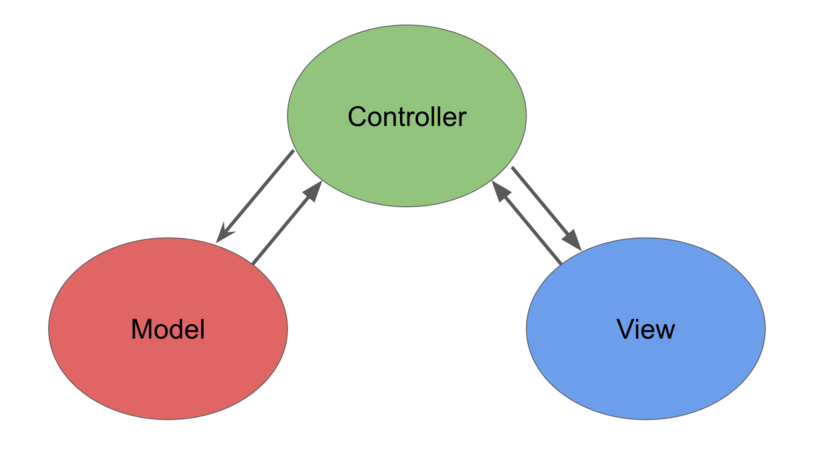
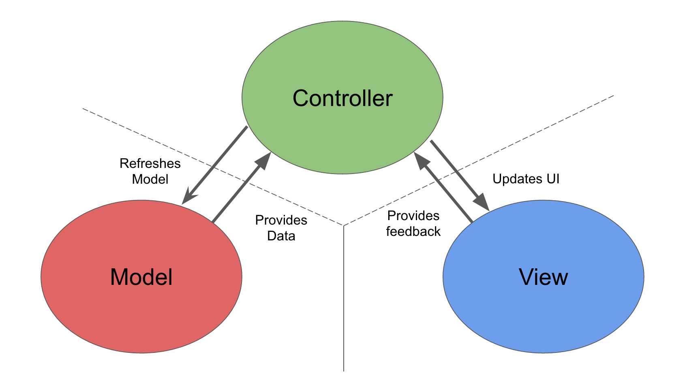
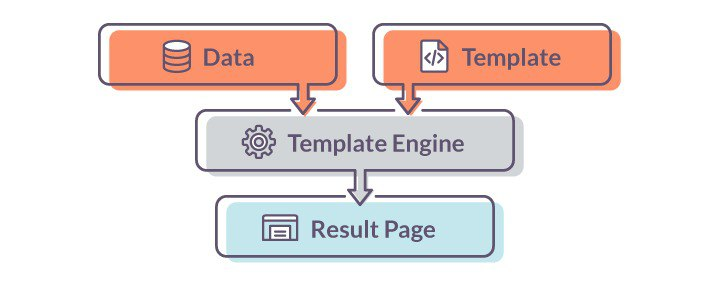

Recap - The MVC Pattern

Before I start digging into the details of the ASP.NET MVC Framework, I want to make sure you are familiar with the MVC
design pattern and the thinking behind it. You might be familiar with some of the ideas and conventions I discuss in this section, especially if you have done advanced
ASP.NET or C# development. If not, I encourage you to pay attention carefully — a good understanding of what lies behind MVC can help
put the features of the framework into context as you continue through the training.
The term model-view-controller has been in use since the late 1970s and arose from the Smalltalk project at Xerox, where it
was conceived as a way to organize some early GUI applications.
Interactions with an MVC application follow a natural cycle of user actions and view updates, where the view is assumed to be
stateless. This fits nicely with the HTTP requests and responses that underpin a Web application. Further, MVC forces a separation of concerns—the domain model and controller logic are decoupled from the user interface. In
a Web application, this means that the HTML is kept apart from the rest of the application, which makes maintenance and testing
simpler and easier. It was Ruby on Rails that led to renewed mainstream interest in MVC and it remains the implementation
template for the MVC pattern. Many other MVC frameworks have since emerged and demonstrated the benefits of MVC—
including, of course, ASP.NET MVC.
Models
Contain or represent the data that users work with.
In high-level terms, the MVC pattern means that an MVC application will be split into at least three pieces:
Models, which contain or represent the data that users work with.
View Models
Represent data being transferred between views and controllers.
These can be simple view models, which just represent
data being transferred between views and controllers;
Domain Models
Contain the data in a business domain as well as the operations, transformations, and rules for manipulating that data.
Or they can be domain models, which contain the data in a business
domain as well as the operations, transformations, and rules for manipulating that data.
Views
Used to render some part of the model as a user interface.
Controllers
Process incoming requests, perform operations on the model, and select views to render to the user.
Which process incoming requests, perform operations on the model, and select views to render to the user.
Loosely cooupled components

Models are the definition of the universe your application works in. In a banking application, for example, the model represents
everything in the bank that the application supports, such as accounts, the general ledger, and credit limits for customers—as well
as the operations that can be used to manipulate the data in the model, such as depositing funds and making withdrawals from the
accounts. The model is also responsible for preserving the overall state and consistency of the data—for example, making sure
that all transactions are added to the ledger, and that a client doesn’t withdraw more money than he is entitled to or more money
than the bank has.
Models are also defined by what they are not responsible for: models don’t deal with rendering UIs or processing requests—
those are the responsibilities of views and controllers. Views contain the logic required to display elements of the model to the user
—and nothing more. They have no direct awareness of the model and do not directly communicate with the model in any way.
Controllers are the bridge between views and the model—requests come in from the client and are serviced by the controller,
which selects an appropriate view to show the user and, if required, an appropriate operation to perform on the model.
Each piece of the MVC architecture is well-defined and self-contained—this is referred to as the separation of concerns. The
logic that manipulates the data in the model is contained only in the model; the logic that displays data is only in the view, and the
code that handles user requests and input is contained only in the controller. With a clear division between each of the pieces, your
application will be easier to maintain and extend over its lifetime, no matter how large it becomes.
ASP.NET MVC 5
Web Application Framework
Implements the MVC pattern
Developed by Microsoft
First Release in 2007
Open Source
The Razor View Engine
Simple-syntax view engine and was released as part of MVC 3

The ASP.NET MVC Framework uses a view engine, which is the component responsible for processing a view in order to
generate a response for the browser. Earlier versions of MVC used the standard ASP.NET view engine, which processed ASPX
pages using a streamlined version of the Web Forms markup syntax. MVC 3 introduced the Razor view engine, which was refined
in MVC 4 (and unchanged in MVC5) and that uses a different syntax entirely
Razor supports C# and uses the @ symbol to transition from HTML to C#
Playground
Razor - Implicitit Expressions
CSHTML@DateTime.Now
@DateTime.IsLeapYear(2016)
HTML9.2.2018 г. 10:49:34
True
Razor - Explicit Expressions
CSHTMLLast week this time: @(DateTime.Now - TimeSpan.FromDays(7))
HTMLLast week this time: 2.2.2018 г. 10:55:00
Razor - Code Blocks
CSHTML@{
var message = "You are the Semicolon to my Statements.";
}
@message
@{
message = "Deleted code is debugged code.";
}
@message
HTML You are the Semicolon to my Statements.
Deleted code is debugged code.
Unlike expressions, C# code inside code blocks isn't rendered. Code blocks and expressions in a view share the same scope and are defined in order:
Razor - Control Structures
Conditionals @if , else if , else , and @switch
CSHTML@if (value % 2 == 0)
{
The value was even.
}
else
{
The value was odd.
}
Control structures are an extension of code blocks. All aspects of code blocks (transitioning to markup, inline C#) also apply to the following structures.
Razor - Control Structures
CSHTML @switch (value)
{
case 1:
The value is 1!
break;
case 1337:
Your number is 1337!
break;
default:
Your number wasn't 1 or 1337.
break;
}
Razor - Control Structures
Looping @for , @foreach , @while , and @do while
CSHTML <ul>
@foreach (var person in people)
{
Name: @person.Name, Age: @person.Age
}
</ul>
Razor - Control Structures
CSHTML <ul>
@for (var i = 0; i < people.Length; i++)
{
var person = people[i];
Name: @person.Name, Age: @person.Age
}
</ul>
Razor - Control Structures
@try, catch, finally
CSHTML @try
{
throw new InvalidOperationException("You did something invalid.");
}
catch (Exception ex)
{
The exception message: @ex.Message
}
finally
{
The finally statement.
}
Razor Directives
Implicit expressions with reserved keywords following the @ symbol.
Razor directives are represented by implicit expressions with reserved keywords following the @ symbol. A directive typically changes the way a view is parsed or enables different functionality.
Razor - Directives
@using
CSHTML@using System.IO
@{
var dir = Directory.GetCurrentDirectory();
}
@dir
HTMLC:\Program Files (x86)\IIS Express
Razor - Directives
@model specifies the type of the model passed to a view
CSHTML@model LoginViewModel
The Login Email: @Model.Email
Razor - Directives
@inherits , @inject , @functions , @section
Html Helpers
An HTML Helper is just a method that returns a string.
The string can represent any type of content that you want. For example, you can use HTML Helpers to render
standard HTML tags like HTML input and img tags. You also can use HTML Helpers to render
more complex content such as a tab strip or an HTML table of database data.
HTML Helpers can be used to render standard HTML tags. They also can be used to render complex content.
Built-in Helpers
Html.ActionLink()
Html.BeginForm()
Html.DropDownList()
Html.TextArea()
Html.Partial()
Html.Password()
...
CSHTML @{
var items = new [] {
new SelectListItem() { Text = "One", Value = "1" },
new SelectListItem() { Text = "Five", Value = "5" },
new SelectListItem() { Text = "Ten", Value = "10" }
};
}
@Html.DropDownList("Quantity", items)
HTML
One
Five
Ten
Live Demo
Using Html Helpers
Creating Custom Html Helpers
Creating a static method
Writing an extension method
@helper
The ASP.NET MVC framework contains a small set of helpers. Most likely, you will need to
extend the MVC framework with custom HTML Helpers. In the remainder of this tutorial, you learn
two methods of creating custom HTML Helpers.
Live Demo
Creating Custom Html Helpers
.NET Core is a general purpose development platform maintained by Microsoft and the .NET community on GitHub. It is cross-platform, supporting Windows, macOS and Linux, and can be used in device, cloud, and embedded/IoT scenarios.
One name to rule them all...
ASP.NET vNext ASP.NET 5 ASP.NET Core
ASP.NET Core
Open-source and cross-platform web framework
Redesign of ASP.NET
ASP.NET Core is a redesign of ASP.NET 4.x, with architectural changes that result in a leaner, more modular framework.
ASP.NET Core
A unified story for building web UI and web APIs.
A cloud-ready, environment-based configuration system.
Built-in dependency injection.
A lightweight, high-performance, and modular HTTP request pipeline.
Ability to host on IIS, Nginx, Apache, Docker, or self-host in your own process.
Side-by-side app versioning when targeting .NET Core.
Ability to build and run on Windows, macOS, and Linux.
ASP.NET Core
ASP.NET
Build for Windows, macOS, or Linux
Build for Windows
Razor Pages is the recommended approach to create a Web UI with ASP.NET Core 2.0. See also MVC and Web API Use Web Forms , SignalR , MVC , Web API , or Web Pages
Multiple versions per machine
One version per machine
Develop with Visual Studio, Visual Studio for Mac , or Visual Studio Code using C# or F#
Develop with Visual Studio using C#, VB, or F#
Higher performance than ASP.NET
Good performance
Choose .NET Framework or .NET Core runtime Use .NET Framework runtime
ASP.NET Core MVC
Building web APIs and web apps
a.k.a. MVC 6
The Model-View-Controller (MVC) pattern helps make your web APIs and web apps testable.
Razor Pages (new in ASP.NET Core 2.0) is a page-based programming model that makes building web UI easier and more productive.
Razor markup provides a productive syntax for Razor Pages and MVC views.
Tag Helpers enable server-side code to participate in creating and rendering HTML elements in Razor files.
Built-in support for multiple data formats and content negotiation lets your web APIs reach a broad range of clients, including browsers and mobile devices.
Model binding automatically maps data from HTTP requests to action method parameters.
Model validation automatically performs client- and server-side validation.
Razor Pages
New page-focused approach built-in & on top of MVC in ASP.NET Core 2
Optionally integrates with Controllers and Views
Customizable conventions
*Not* a PHP attempt*Not* the new version ASP.NET Web Pages attempt*Not* only for "simple" scenarios
Razor Pages is a new feature of ASP.NET Core MVC that makes coding page-focused scenarios easier and more productive. We can use
either Razor Pages or the classical Model-View-Controller approach for creating web apps, but Razor pages is the recommended approach.
It *is* MVC
Routing
Models
ActionDescriptors
ActionResults
Filters
Model Binding
Value Providers
ViewContext
TempData
Tag Helpers
Layout & Partials
View Components
Live Demo
Getting Started with Razor Pages
ASP.NET Core TagHelpers
What are Tag Helpers?
Allow server-side code to participate in rendering of HTML elements in Razor files
Target HTML elements based on element and attribute names
Reduce explicit transitions between HTML and C# in Razor files
Take advantage of the composition and tooling benefits of HTML in Visual Studio
Tag Helpers over Html Helpers
Cleaner Syntax
More control over the markup
Intellisense
// Before - HTML Helpers
@Html.ActionLink("Click me", "MyController", "MyAction",
{ @class="my-css-classname", data_my_attr="my-attribute"})
// After - Tag Helpers
<a asp-controller="MyController" asp-action="MyAction"
class="my-css-classname" my-attr="my-attribute">Click me</a>
An HTML-friendly development experience For the most part, Razor markup using Tag Helpers looks like standard HTML.
Front-end designers conversant with HTML/CSS/JavaScript can edit Razor without learning C# Razor syntax.
A rich IntelliSense environment for creating HTML and Razor markup This is in sharp contrast to HTML Helpers,
the previous approach to server-side creation of markup in Razor views.
Live Demo
Using Tag Helpers
Live Demo
Creating Custom Tag Helpers
Telerik UI for ASP.NET Core
Telerik UI for ASP.NET Core is a set of server-side wrappers that allows using the Kendo UI widgets in .NET Core.
Getting Started
Home ,
Docs
Project Setup
Using the Visual Studio Project Wizard


.jpg)